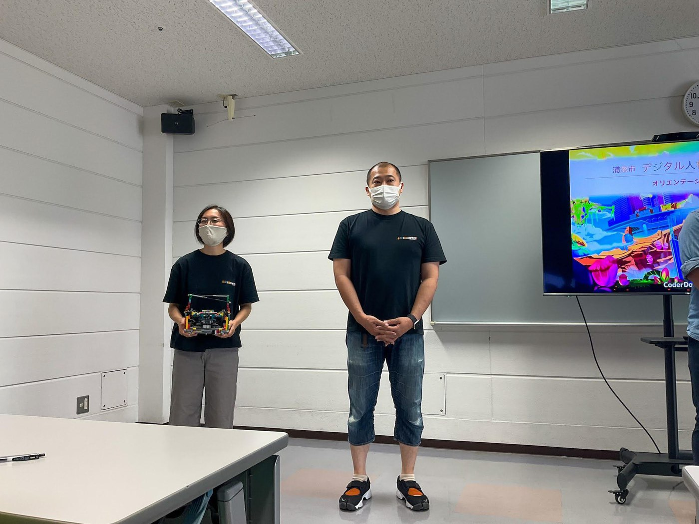
実施期間2023年4月〜2024年3月
4月から3月まで、ロボット部門とアプリ開発部門を並行して実施しました。
ロボット部門とアプリ開発部門に分かれ、WROや各種プログラミングコンテストを目指した高度な活動に取り組みました。
2023年度は4月から3月まで計88回実施され、ロボット部門ではWRO沖縄大会・全国大会・岐阜交流大会を目指し、アプリ開発部門ではU22プログラミングコンテスト、Technovation Girls、全国小中学生プログラミングコンテストへの応募と入賞を目標に学びました。あわせて、AI、Scratch、ボードゲーム、探究学習、星空観測など多様なイベントも行われました。

4月から3月まで、ロボット部門とアプリ開発部門を並行して実施しました。
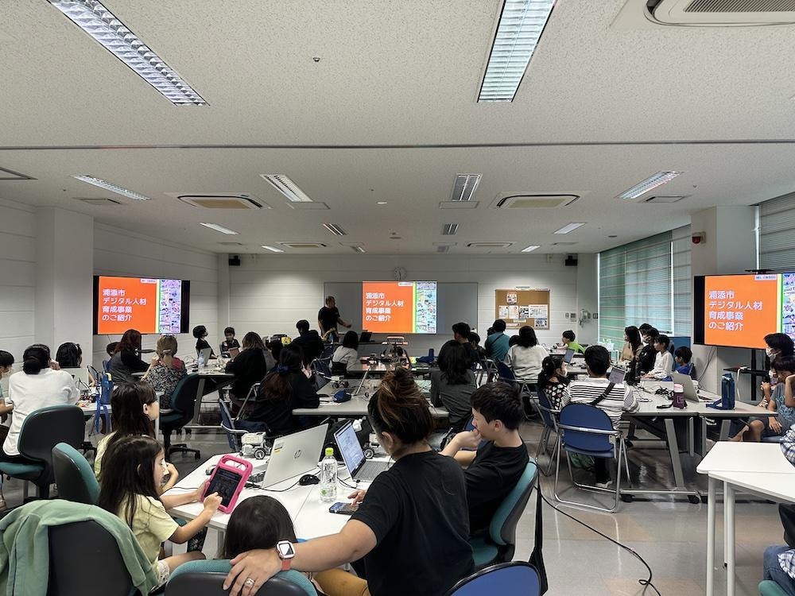
ロボット部門とアプリ開発部門に分かれ、年間を通して制作と大会・発表へ取り組みました。
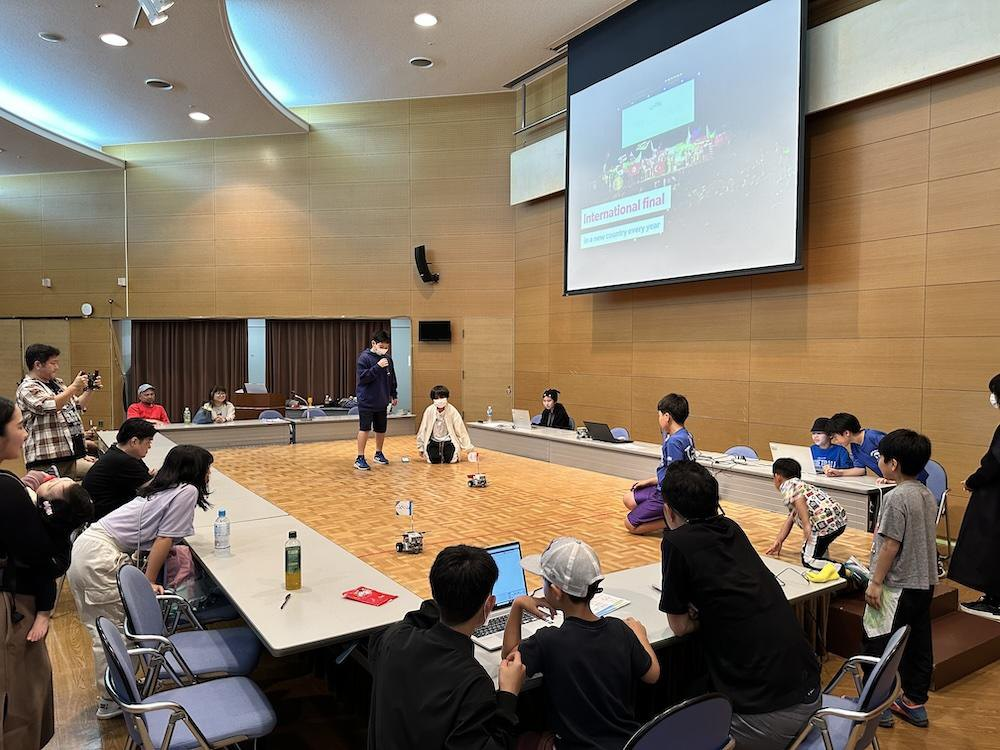
WRO大会、アプリ開発、AI・Scratchワークショップ、探究学習イベントを組み合わせました。
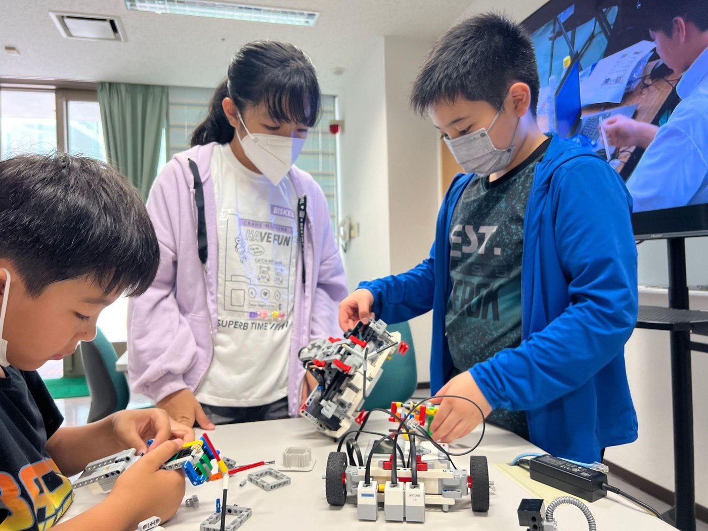
WRO沖縄推進委員会の指導・運営により、WRO大会を目標にロボットプログラミングを継続的に学びました。
CoderDojo浦添が中心となり、アプリ開発に必要な知識と技術を学び、生成AIやScratch、ボードゲーム、探究学習などの体験も行いました。
ロボット部門とアプリ開発部門に分かれ、日々の制作、試走、大会、体験イベントへと活動を積み上げました。
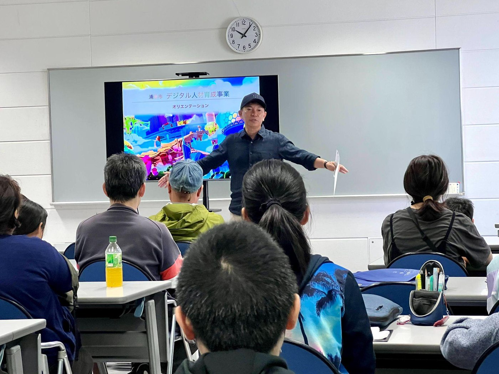
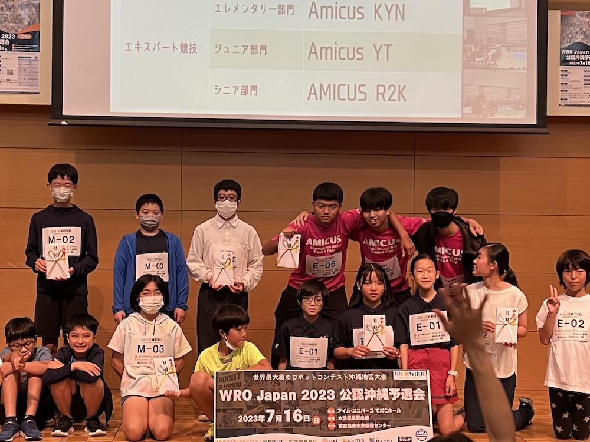
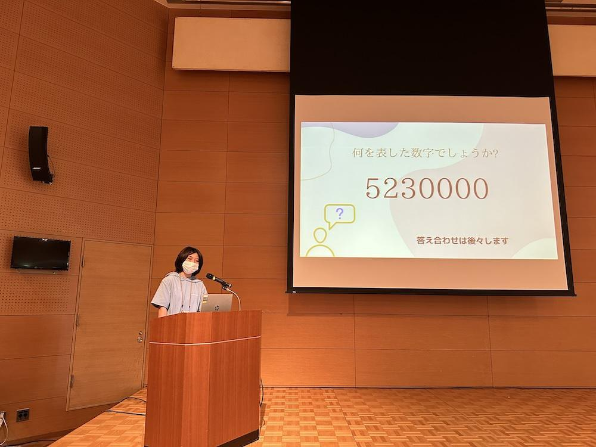
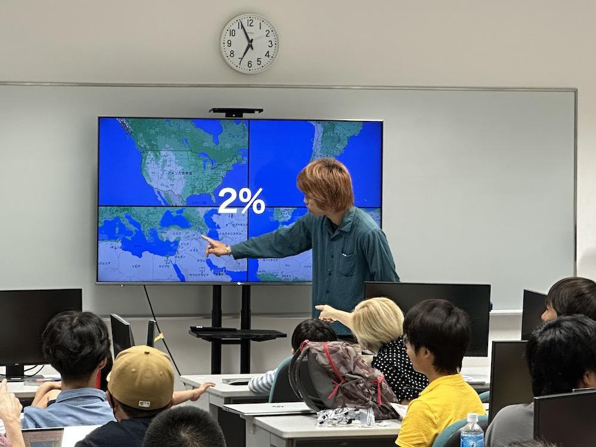
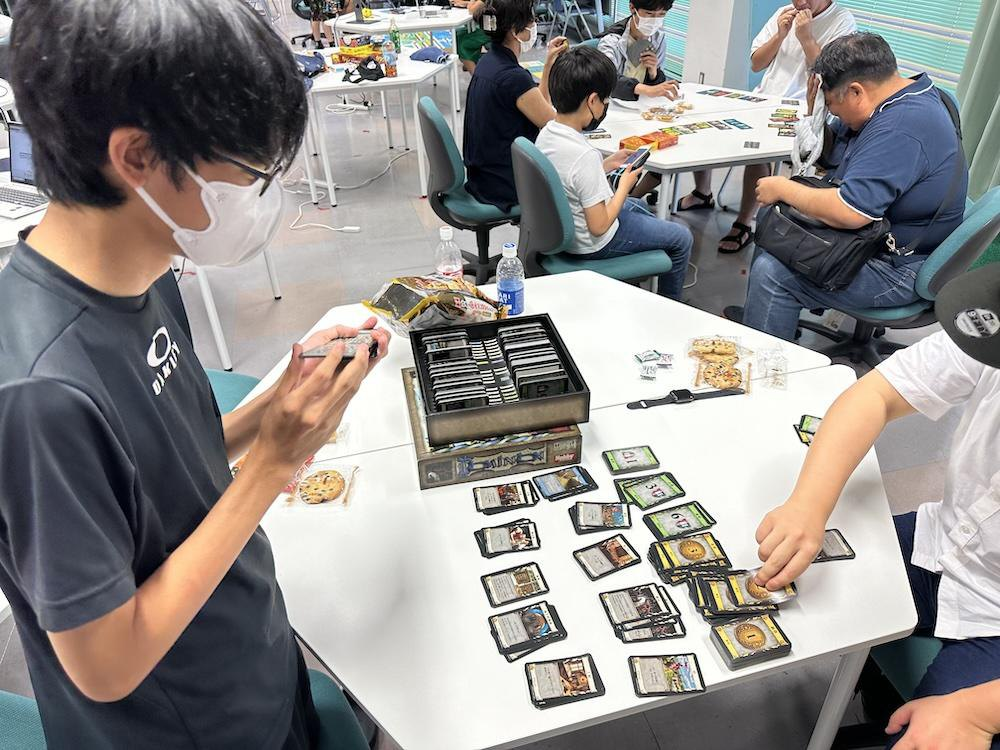
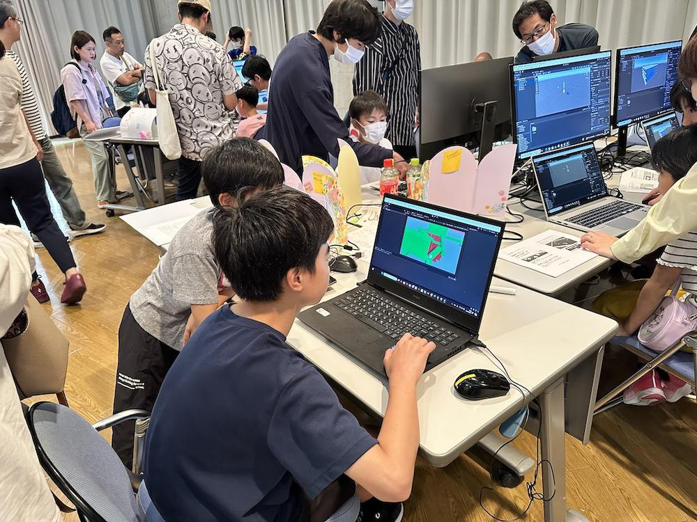
WROへの挑戦、アプリ開発、AI・Scratch体験ワークショップを通して、制作したものを発表し、他の子どもたちへ伝える場をつくりました。
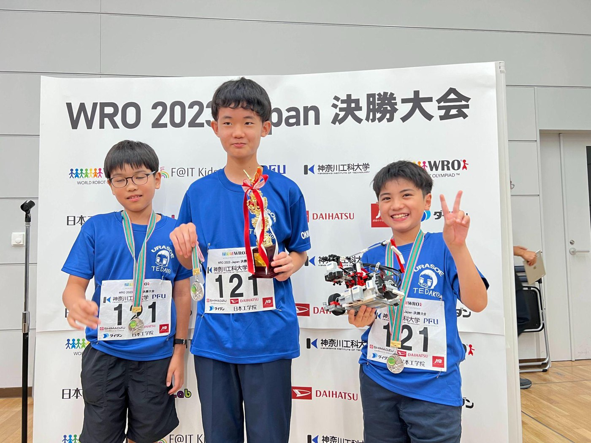
WROを目標に、ロボットの調整、プログラミング、試走、大会参加に取り組みました。
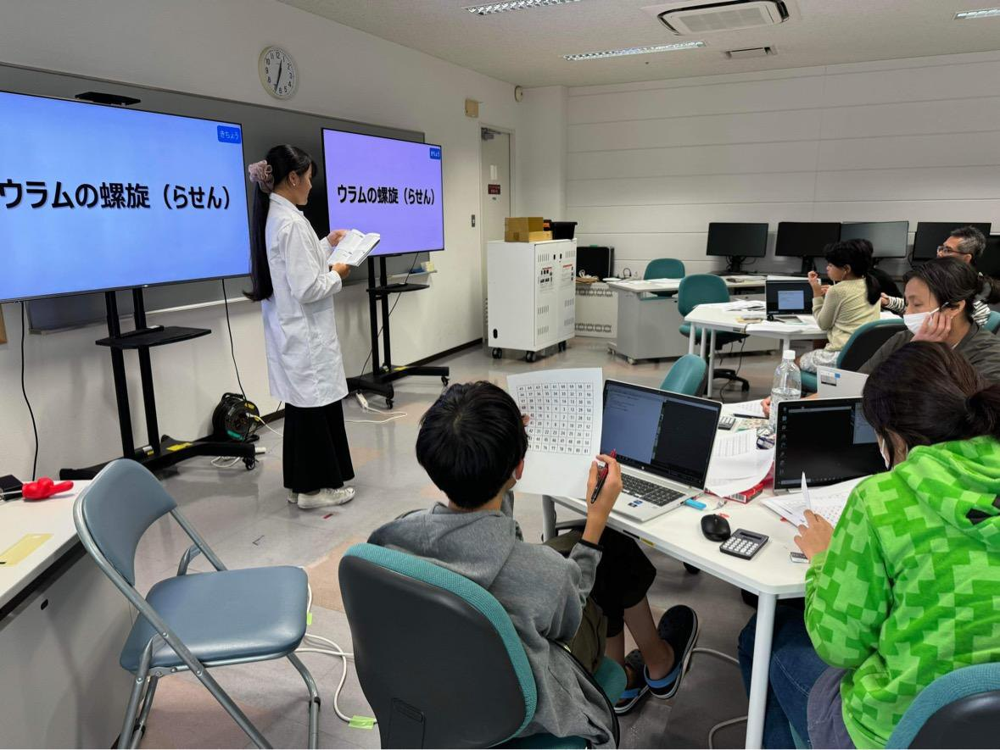
アプリ開発に必要な技術を学び、各種プログラミングコンテストへの応募を目指しました。
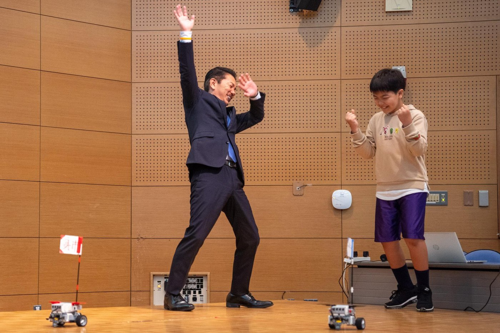
画像生成AIやScratchを使い、一般参加者も体験できる学びの場をつくりました。